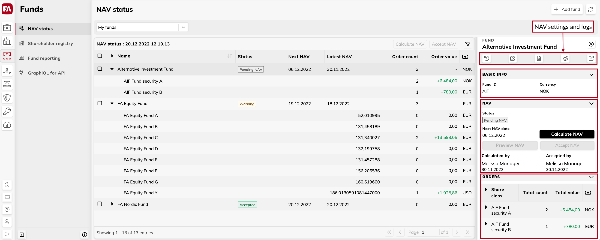

The Fund details pane on the right shows information about the fund selected from the list.

- NAV history button
Opens the NAV window where you can view details of previous NAV calculations.
- Audit log button
Opens the Audit logs window that shows the history of user actions and provides information about errors. The following user actions are logged:
NAV calculation, deletion, acceptance, and rollback.
Running deferrals.
Fees calculation, acceptance, and rollback.
NAV report generation.
If something goes wrong, you will see a message that the action failed or was completed with errors. For more information, click the log entry and view the details on the right.
- Add share class button
Opens the Share class wizard to create a share class for the fund.
- View in FA Back button
Opens the fund portfolio, NAV, and fees calculation settings in FA Back.
NAV information shows NAV status, next NAV calculation date, who and when calculated and accepted the current NAV.
If the calculation or acceptance is in progress, you can see the buttons to interrupt it in case something goes wrong:
- Stop calculation
Stop the NAV calculation and return to the Pending NAV status. The button is shown when the NAV calculation is in progress.
- Stop acceptance
Stop the NAV acceptance. The button removes all changes made during the acceptance in FA Back, similar to rollback (see the rollback description in the NAV window) but keeps the latest NAV calculation. You can then recalculate NAV if needed.NAV window
The button is shown when the NAV acceptance is in progress.
- Roll back failed calculation
Roll back NAV calculation that was interrupted due to a system error on the FA side. This is a rare situation indicated with the "Error" status (see Regular NAV calculation workflow). If you see the Error status, click the Roll back failed calculation button – the fund will return to the "Pending" status.
- Roll back failed acceptance
Roll back NAV acceptance that failed due to a system error on the FA side. This is a rare situation indicated with the "Error" status (see Regular NAV calculation workflow). If you see the "Error" status, read the error message displayed in the list of funds (hover over the icon) – the message says at what stage the acceptance was interrupted. Open FA Back and remove the changes made during this step, if you find any (for example, you might need to delete the fee or cash transactions). Then, click the Roll back failed acceptance button – this will cancel all other acceptance steps.
Orders information shows outstanding trade orders per share class affecting the next NAV calculation.
- Total count
Total number of outstanding trade orders on the fund level and for each share class. The number is based on the trade orders marked as executable in FA Back.
- Total value
Value of outstanding trade orders. The calculation depends on how the trade order was entered in FA Back:
If the trade orders are based on the trade amount, Total value shows total net value. It is shown on the share class level, and also on the fund level, if all fund share classes are in the same currency.
If the trade orders are based on the number of units, Total value shows total number estimated with latest NAV:
Equation 1.